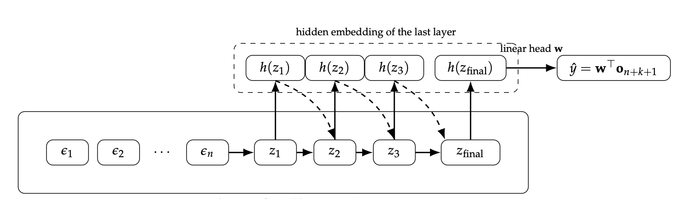
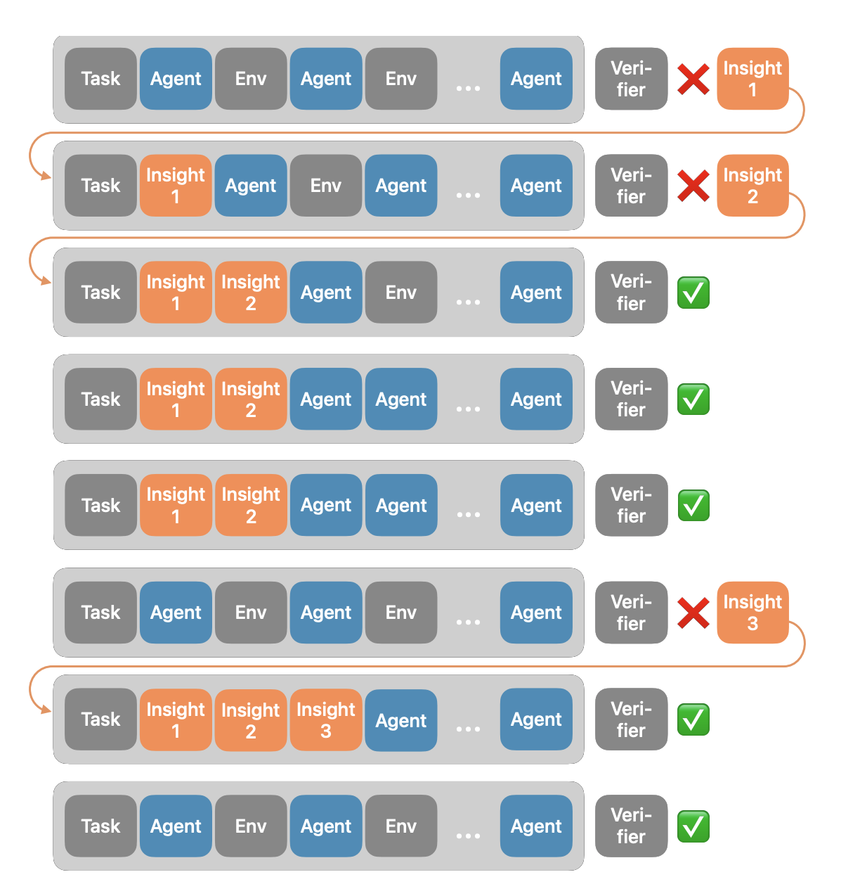
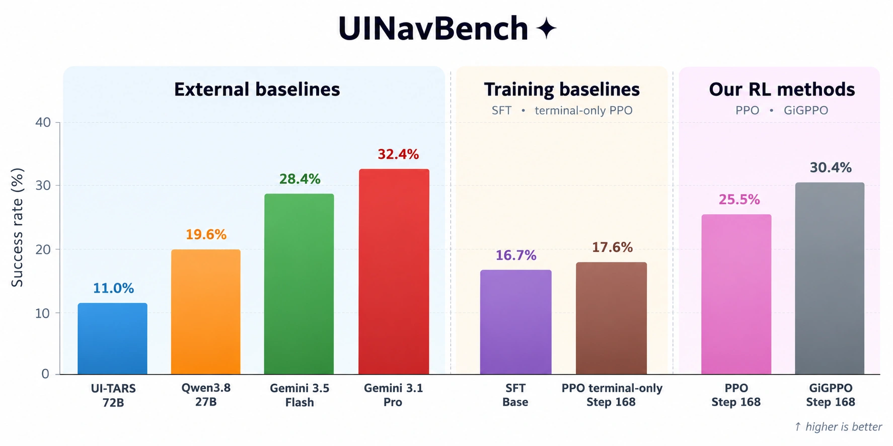
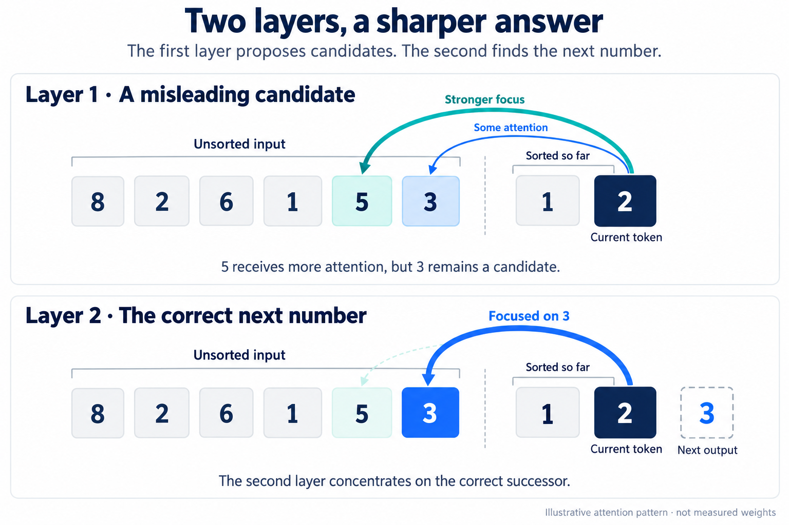
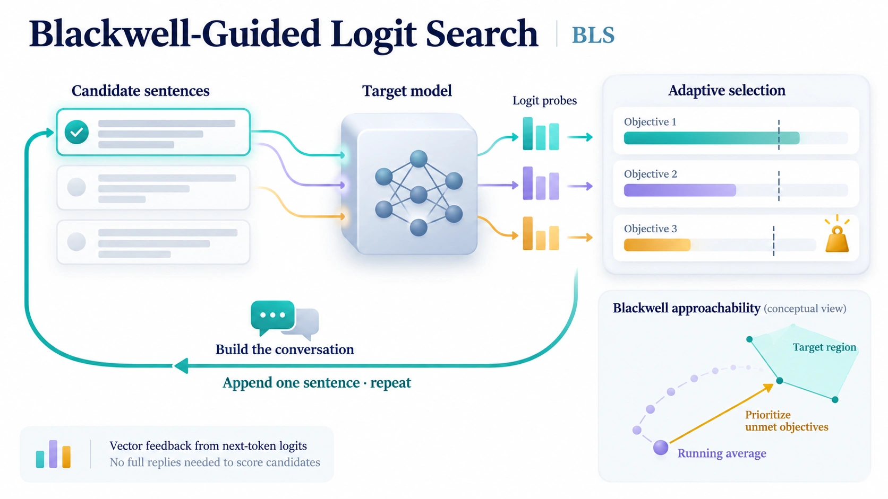
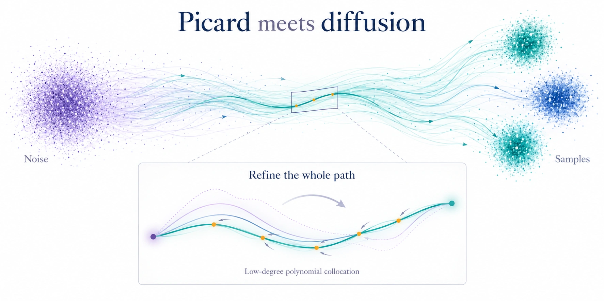

Khashayar
Gatmiry.
Hi there! I am a postdoctoral researcher at the Simons Institute at UC Berkeley, hosted and advised by Peter Bartlett, where I also work closely with Jason Lee and Nika Haghtalab. I am a part-time researcher on Apple’s Machine Learning Research (MLR) team, working with Emmanuel Abbe and Samy Bengio. I am also a member of the Berkeley Artificial Intelligence Research (BAIR) Lab.
My research explores new training paradigms to advance the reasoning capabilities of large language models while making them more interpretable and safer.
Previously, I completed my PhD in EECS at MIT, where I was fortunate to be advised by Stefanie Jegelka and Jonathan Adam Kelner. My doctoral research focused on optimization for modern deep learning, diffusion models, and fundamental problems in machine learning theory.
News
I presented our work on Abstract Token Curriculum (ATC) at the Aspen Meeting on Foundation Models in Aspen, Colorado, discussing how models can learn internal reasoning representations through a curriculum of increasingly challenging tasks.
Our paper High-accuracy and dimension-free sampling with diffusions was selected for an oral presentation at ICML 2026 (awarded to fewer than 1% of all submissions).
I completed my PhD in Computer Science at MIT and began a postdoctoral position at the Simons Institute at UC Berkeley, alongside a part-time research role on Apple’s Machine Learning Research team.
Recent work


Online Dense Reinforcement Learning with Planning-Grounding Agent for UI Navigation on Live iOS Apps




Blackwell-Guided Logit Search (BLS): Optimizing Multi-Turn Jailbreaks with Subliminal Steering




PAPERS & PREPRINTS
Publications
23 papers · organized by research topic
Preprint
ICML 2024
ICML Workshop 2024
ICML 2026
COLT 2025
NeurIPS 2024
ICML 2024
NeurIPS 2023
ICLR 2022
NeurIPS 2022
JMLR 2023
COLT 2024
Preprint
NeurIPS 2023
COLT 2023
SODA 2024
TOIS 2021
COLT 2024
JMLR
Preprint
AISTATS 2024
NeurIPS 2020
Preprint
Preprint
No matching papers. Try another topic or search.
More on Google ScholarPREVIOUSLY
A little background
I have spent time at Google in New York (October 2022–January 2023), working with Sashank Reddi and Sobhan Miryoosefi on efficient BERT training, and at Microsoft Research (June–August 2024), working with Ronen Eldan, Adil Salim, and Yi Zhang on language models and embeddings.